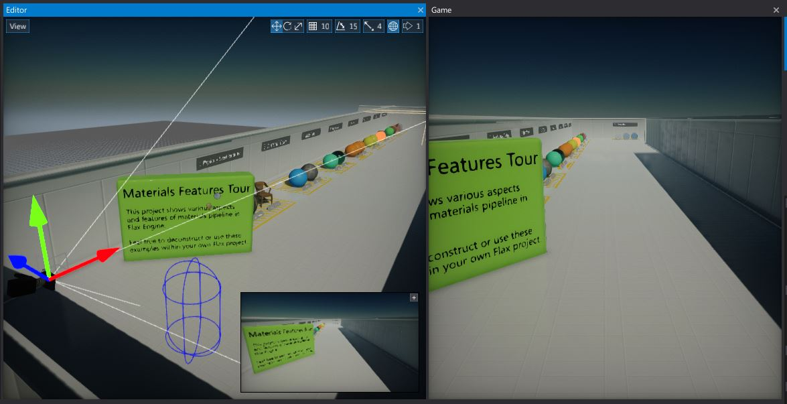
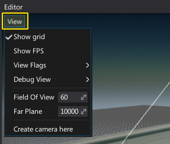
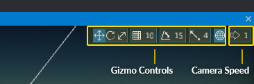

Viewport

Viewport term refers to Editor Window and Game Window. Both are used to preview the level.
- Game window - shows the current game camera view with GUI and game input control logic
- Editor window - an interactive view into your level.
Editor window
This view allows navigating the camera through the scene as well as selecting, transforming and editing scene objects
Widgets
The Editor viewport contains a set of widget buttons. In the upper left corner it has a View button that allows you to change the current viewport properties, debug rendering or spawn a new camera actor.

In the upper right corner there is set of widget buttons to control the transform gizmo and viewport camera speed. To learn more about using a transform gizmo see this page.
Controls
| Action | Description |
|---|---|
| LMB | Select object |
| Ctrl + LMB | Add/remove object from selection |
| RMB | Rotate camera |
| RMB + Arrows/WSAD | Move camera |
| RMB + MMB | Move camera |
| MMB | Pan camera |
| Mouse Wheel | Zoom in/out |
| RMB + Shift | Speed up camera by 2 |
| RMB + Mouse Wheel | Change camera speed up/down |
| Alt + LMB | Orbit camera (around last viewed object center, translated) |
| F | Show selected actor (focus on it) |
| Delete | Delete selected objects |
| End | Snap selected objects to the ground |
| 1 | Set gizmo mode to Translate |
| 2 | Set gizmo mode to Rotate |
| 3 | Set gizmo mode to Scale |
All key shortcuts related to level editing windows (viewport, scene window, properties, etc.) are available. For instance, use Ctrl + S to save all changes. Note: some input configurations can be changed via the Editor Options.

Game window
The Game Window is rendered from the camera(s) in your game. It is representative of your final, built game during in-editor simulation. You will need to use one or more cameras to control what the player actually sees when they are playing your game.